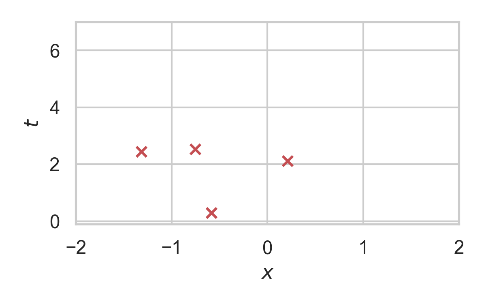

Channel Simulation with Poisson Processes
Gergely Flamich
05/04/2023
1. Lossy Image Compression
2. Channel Simulation
Source \(X\), latent \(Z\), model \(P_{X, Z}\)
Encoder:
- Receive \(X \sim P_X\) from source
- Encode \(Z \sim P_{Z \mid X}\) using \(P_Z\)
Decoder:
- Recover \(Z\) using \(P_Z\)
- Recover \(\hat{X} \sim P_{X \mid Z}\)
3. Channel Simulation
Assumptions
- \(I[X; Z] < \infty\)
- Can simulate \(Z \sim P_Z\)
- Encoder and decoder share PRNG seed
4. Poisson Processes
- Collection of random points in space
- Focus on spatio-temporal processes on \(\mathbb{R}^D \times \mathbb{R}^+\)
- Exponential inter-arrival times
- Spatial distribution \(P_{X \mid T}\)
5. Poisson Processes

5.1. Example with \(P_{X \mid T} = \mathcal{N}(0, 1)\)

5.2. Example with \(P_{X \mid T} = \mathcal{N}(0, 1)\)

5.3. Example with \(P_{X \mid T} = \mathcal{N}(0, 1)\)

5.4. Example with \(P_{X \mid T} = \mathcal{N}(0, 1)\)

5.5. Example with \(P_{X \mid T} = \mathcal{N}(0, 1)\)

5.6. Example with \(P_{X \mid T} = \mathcal{N}(0, 1)\)

5.7. Example with \(P_{X \mid T} = \mathcal{N}(0, 1)\)

5.8. Example with \(P_{X \mid T} = \mathcal{N}(0, 1)\)

6. Rejection Sampling

6.1. RS with \(P = \mathcal{N}(0, 1), Q = \mathcal{N}(1, 1/16)\)

6.2. RS with \(P = \mathcal{N}(0, 1), Q = \mathcal{N}(1, 1/16)\)

6.3. RS with \(P = \mathcal{N}(0, 1), Q = \mathcal{N}(1, 1/16)\)

6.4. RS with \(P = \mathcal{N}(0, 1), Q = \mathcal{N}(1, 1/16)\)

6.5. RS with \(P = \mathcal{N}(0, 1), Q = \mathcal{N}(1, 1/16)\)

6.6. RS with \(P = \mathcal{N}(0, 1), Q = \mathcal{N}(1, 1/16)\)

6.7. RS with \(P = \mathcal{N}(0, 1), Q = \mathcal{N}(1, 1/16)\)

6.8. RS with \(P = \mathcal{N}(0, 1), Q = \mathcal{N}(1, 1/16)\)

6.9. RS with \(P = \mathcal{N}(0, 1), Q = \mathcal{N}(1, 1/16)\)

6.10. RS with \(P = \mathcal{N}(0, 1), Q = \mathcal{N}(1, 1/16)\)

6.11. RS with \(P = \mathcal{N}(0, 1), Q = \mathcal{N}(1, 1/16)\)

6.12. RS with \(P = \mathcal{N}(0, 1), Q = \mathcal{N}(1, 1/16)\)

7. Channel Simulation with Rejection Sampling
Encoder:
- Receive \(X \sim P_X\)
- Rejection sample from \(P_{Z \mid X}\) using \(P_Z\).
- Send index \(K\) of the accepted sample.
Decoder:
- Simulate the same \(K\) samples from \(P_Z\)
8. Efficiency of RS
Best possible bound is \(M^* = \sup_{z} \frac{p(z \mid X)}{p(z)}\).
Define \(D_{\inf}[P_{Z \mid X} \Vert P_Z] = \log M^*\).
\(K\) is geometric.
\(H[K \mid X] \geq D_{\inf}[P_{Z \mid X} \Vert P_Z]\).
\(\mathbb{E}[K \mid X] = \exp(D_{\inf}[P_{Z \mid X} \Vert P_Z])\).
9. Greedy Poisson Rejection Sampling

9.1. GPRS with \(P = \mathcal{N}(0, 1), Q = \mathcal{N}(1, 1/16)\)

9.2. GPRS with \(P = \mathcal{N}(0, 1), Q = \mathcal{N}(1, 1/16)\)

9.3. GPRS with \(P = \mathcal{N}(0, 1), Q = \mathcal{N}(1, 1/16)\)

9.4. GPRS with \(P = \mathcal{N}(0, 1), Q = \mathcal{N}(1, 1/16)\)

9.5. GPRS with \(P = \mathcal{N}(0, 1), Q = \mathcal{N}(1, 1/16)\)

9.6. GPRS with \(P = \mathcal{N}(0, 1), Q = \mathcal{N}(1, 1/16)\)

9.7. GPRS with \(P = \mathcal{N}(0, 1), Q = \mathcal{N}(1, 1/16)\)

10. How to find \(\sigma\)?
Define
\[ W(h) = \int_0^h \min\left\{h \cdot p(z), p(z \mid X)\right\} \, dz \]
Then
\[ \sigma(h) = \int_0^h \frac{1}{1 - W(\eta)} \, d\eta. \]
11. How to find \(\sigma\)?
12. Analysis of GPRS
Codelength
\[ H[K \mid X] \leq D_{KL}[P_{Z \mid X} \Vert P_Z] + \log(D_{KL}[P_{Z \mid X} \Vert P_Z] + 1) + \mathcal{O}(1) \]
\[ H[K] \leq I[X; Z] + \log(I[X; Z] + 1) + \mathcal{O}(1) \]
Runtime
\[ \mathbb{E}[K \mid X] = \exp(D_{\inf}[P_{Z \mid X} \Vert P_Z]) \]
13. Speeding up GPRS
13.1. Fast GPRS with \(P = \mathcal{N}(0, 1), Q = \mathcal{N}(1, 1/16)\)

13.2. Fast GPRS with \(P = \mathcal{N}(0, 1), Q = \mathcal{N}(1, 1/16)\)

13.3. Fast GPRS with \(P = \mathcal{N}(0, 1), Q = \mathcal{N}(1, 1/16)\)

13.4. Fast GPRS with \(P = \mathcal{N}(0, 1), Q = \mathcal{N}(1, 1/16)\)

13.5. Fast GPRS with \(P = \mathcal{N}(0, 1), Q = \mathcal{N}(1, 1/16)\)

13.6. Fast GPRS with \(P = \mathcal{N}(0, 1), Q = \mathcal{N}(1, 1/16)\)

14. Analysis of faster GPRS
Now, encode search path \(\pi\).
\(H[\pi] \leq I[X; Z] + \log(I[X; Z] + 1) + \mathcal{O}(1)\)
\(\mathbb{E}[\lvert\pi\rvert] = \mathcal{O}(I[X; Z])\)
15. Some Open Questions
- Fast algorithm for multivariate Gaussians?
- Tighter general lower bound on runtime?